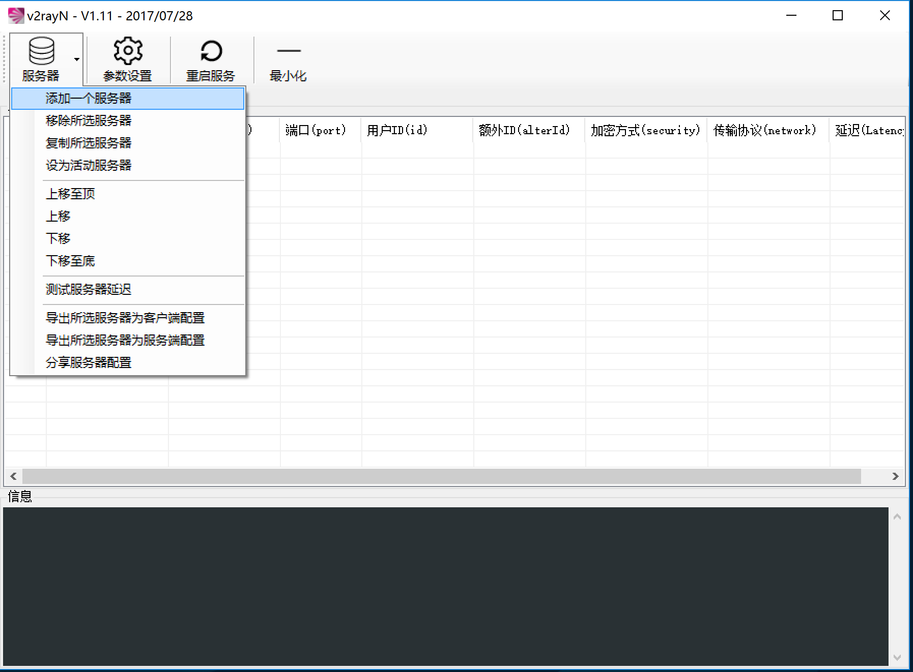
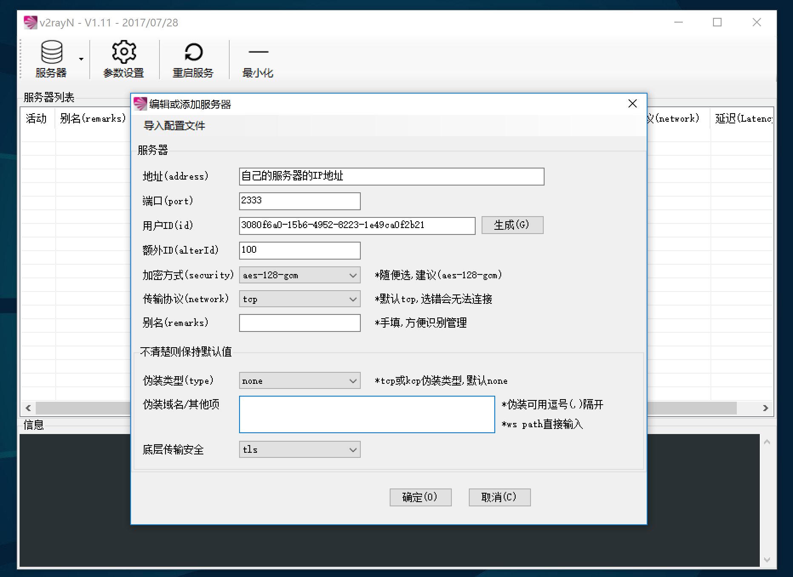
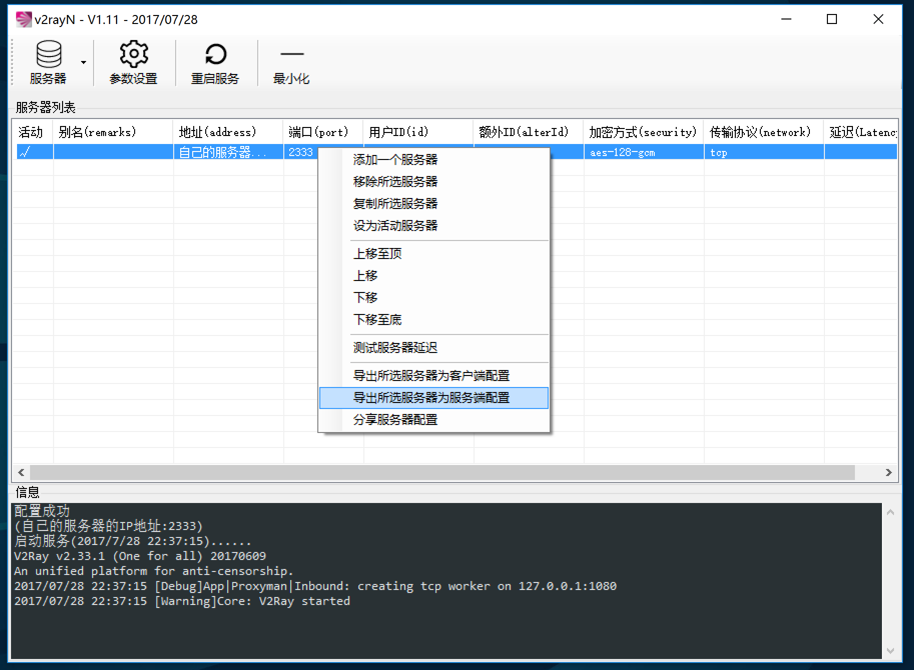

背景
因为某知名代理软件不再开发，所以我们需要找到一个保持更新的高效的代理软件用于以后的使用。还记得之前我们开发过一个 V2ray-Bash 的程序，配置V2ray非常简单。但是博主因为某些特殊原因，不得不删除这些脚本了。今天给大家介绍一个非常非常简单快捷地部署V2ray的方法。
简介
V2rayN 是一个用于Windows上的V2ray客户端软件，因为其功能简单易懂，非常适合小白使用。
下载安装
V2rayN 地址：https://github.com/v2ray/v2rayN/releases
V2ray-Core 地址：https://github.com/v2ray/v2ray-core/releases
下载完成后解压，然后把V2ray-Core和V2rayN的文件都放在同一目录下
如图所示：
{kind=link}
然后我们打开 V2rayN 程序
在V2rayN软件里选择添加一个服务器。
{kind=link}
在这里输入你想使用的配置，然后点击确定。如果有什么不懂得，可以参考官方手册：http://v2ray.com
{kind=link}
{kind=link}
然后我们右击这个服务器，选择导出为 服务端配置。
然后把这个文件保存到桌面上，命名为 config.json 文件.
然后我们连接上服务器，使用V2ray官方的一键脚本安装（脚本仅支持 Centos 7、Debian 8、 Ubuntu 14 +）
- bash <(curl -L -s https://install.direct/go.sh)
然后我们看到这里就表示安装完成了。
{kind=link}
下面我们将刚刚导出的，保存在桌面的 config.json 上传到VPS上面。
下面，我们删除 /etc/v2ray 里面的 config.json 文件，然后把我们刚刚上传的文件移动过来。
如果你上传到 /root 目录里，我们命令这么写：
- rm -rf /etc/v2ray/config.json #删除原来服务器上的配置文件
- mv /root/config.json /etc/v2ray/ #把刚刚上传到 /root 里面的 config.json 复制到 V2ray 目录下
- service v2ray restart #重新启动V2ray
当配置文件复制完，V2ray重新运行后，我们开启刚刚的端口的防火墙规则：
- iptables -I INPUT -m state --state NEW -m tcp -p tcp --dport 你配置的端口号 -j ACCEPT
- iptables -I INPUT -m state --state NEW -m udp -p udp --dport 你配置的端口号 -j ACCEPT
然后我们大功告成！我们就可以看到电脑上V2rayN也在运行，我们这时候就可以使用IE代理设置，或者一些浏览器插件，来使用本地1080代理。
如果只是使用谷歌浏览器上网，推荐各位安装使用 Proxy SwitchyOmega 插件，Chrome插件地址：点我点我